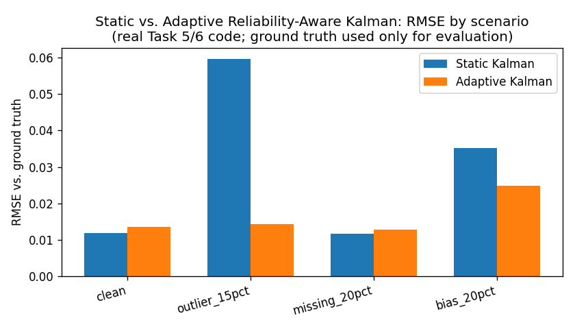
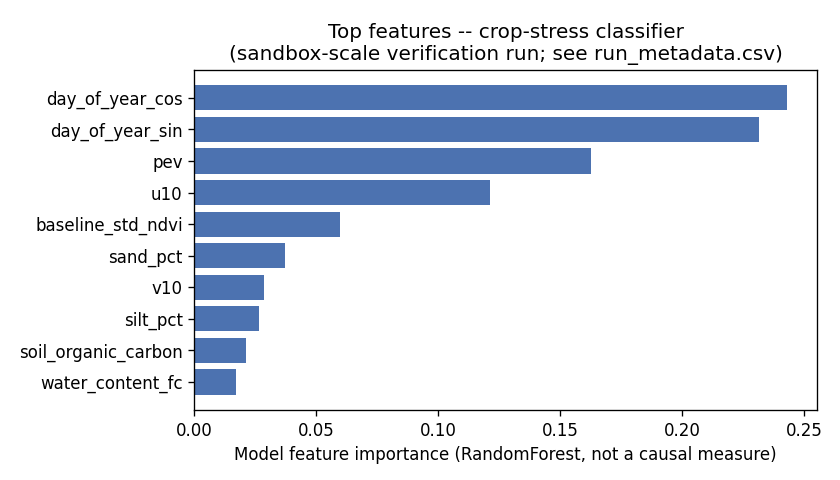
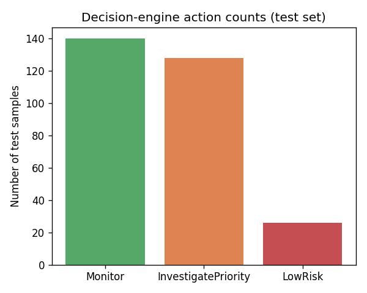

Generated from real, persisted Spark/Scala run outputs. Sandbox-scale verification (see notes) -- not full-dataset production numbers.

| Scenario | Static RMSE | Adaptive RMSE | Delta |
|---|---|---|---|
| clean | 0.01194 | 0.01348 | +0.00153 |
| outlier_15pct | 0.05973 | 0.01426 | -0.04547 |
| missing_20pct | 0.01161 | 0.01274 | +0.00114 |
| bias_20pct | 0.03517 | 0.02484 | -0.01034 |
Negative delta = adaptive Kalman has lower error (better). Adaptive costs a small amount on clean/missing data but substantially reduces error under outlier and bias corruption.
| Metric | Value |
|---|---|
| accuracy | 0.5136054421768708 |
| precision_weighted | 0.5073372206025266 |
| recall_weighted | 0.5136054421768708 |
| f1 | 0.3865708312083312 |
| roc_auc | 0.5759273838744037 |
| pr_auc | 0.5808961756500794 |
| confusion_actual0_pred0 | 144 |
| confusion_actual0_pred1 | 7 |
| confusion_actual1_pred0 | 136 |
| confusion_actual1_pred1 | 7 |
| positive_class_recall | 0.04895104895104895 |
Run scope: 150 cells, 728 train / 294 test rows, numTrees=10, maxDepth=3 (documented code default: numTrees=100, maxDepth=8). reduced scale due to 1-CPU-core sandbox; full pipeline (19926 cells / 398027 rows) does not complete within one tool-call time budget

| alpha | qhat | Empirical coverage | Avg. set size | Ambiguous | Total |
|---|---|---|---|---|---|
| 0.1 | 0.7176 | 0.9490 | 1.7789 | 229 | 294 |
Split conformal, finite-sample-corrected quantile. Target coverage = 1-alpha = 0.90. Marginal coverage guarantee under exchangeability -- see ConformalPrediction.scala for the exact, documented method.

Deterministic rule combining predicted probability and conformal ambiguity. Decision-support demonstration only, not an agronomic recommendation.
| mode | local_fallback_no_live_kafka |
| observable_readings_generated | 135 |
| kalman_outputs_soil_moisture | 45 |
| present_observations | 45 |
| missing_observations | 0 |
local_fallback_no_live_kafka: no live Kafka broker was available in this environment; the same ObservableReading schema and the same StreamingKalmanPipeline.processBatch logic that a live Kafka micro-batch would use were exercised against a locally generated batch instead.